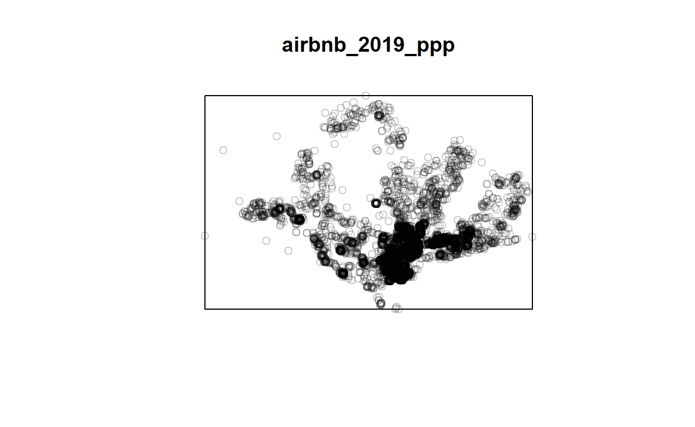
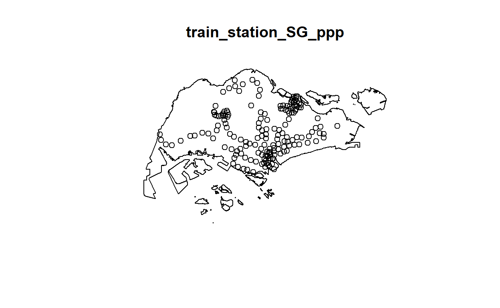
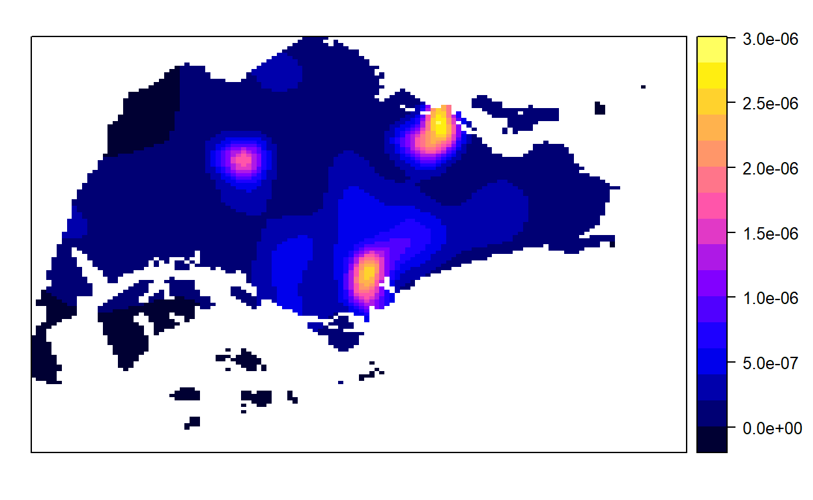
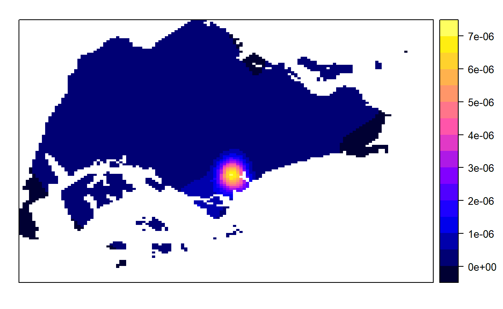

1.0.0 Context and analysis goal(s):
1.1.o Contexts Due to the ever-changing world, people all around the world are able to set up simple, small scale business operations within the comfort of our home. Our analysis will focus on Airbnb, the leading short-term rentals. While it is not legal to make short-term rentals, enforcement of such legal policy would be rare.
1.2.0 Analysis Goals:
- Main goal: To determine if distribution of Airbnb listings are affected by factors such as as existing hotels, public transport options and other notable amenities
1.2.1 Exploratory Spatial Data Analysis
- Derive kernel density maps of Airbnb listings, hotel, MRT services and tourist attractions.
- Display kernel density maps on openstreetmap of Singapore. Describe the spatial patterns derived from the kernel density maps.
1.2.2 Second-Order Spatial Point Patterns Analysis (2nd order SPPA)
- Formulate null and alternative hypothesis, select confidence level
- perform tests using “2nd order SPPA” technique
- Draw statistical conclusions
- Understanding the Dataset
2.1 Airbnb listings
Datas: Aspatial + Airbnb listing at 30th June 2019: 30062019.csv + Airbnb listing at 29th June 2021: 29062021.csv
Source: http://insideairbnb.com/get-the-data.html
Geospatial + Train Stations: MRTLRTStnPtt.shp +
- Importing Required Packages
- Importing datas
4.1 importing Geospatial data
4.1.1. importing train station shp file
Reading layer `MRTLRTStnPtt' from data source
`C:\JunLonggggg\junlong-is415\_posts\2021-09-20-take-home-exercise-2\data\geospatial'
using driver `ESRI Shapefile'
Simple feature collection with 171 features and 3 fields
Geometry type: POINT
Dimension: XY
Bounding box: xmin: 6138.311 ymin: 27555.06 xmax: 45254.86 ymax: 47854.2
Projected CRS: SVY21Coordinate Reference System:
User input: SVY21
wkt:
PROJCRS["SVY21",
BASEGEOGCRS["SVY21[WGS84]",
DATUM["World Geodetic System 1984",
ELLIPSOID["WGS 84",6378137,298.257223563,
LENGTHUNIT["metre",1]],
ID["EPSG",6326]],
PRIMEM["Greenwich",0,
ANGLEUNIT["Degree",0.0174532925199433]]],
CONVERSION["unnamed",
METHOD["Transverse Mercator",
ID["EPSG",9807]],
PARAMETER["Latitude of natural origin",1.36666666666667,
ANGLEUNIT["Degree",0.0174532925199433],
ID["EPSG",8801]],
PARAMETER["Longitude of natural origin",103.833333333333,
ANGLEUNIT["Degree",0.0174532925199433],
ID["EPSG",8802]],
PARAMETER["Scale factor at natural origin",1,
SCALEUNIT["unity",1],
ID["EPSG",8805]],
PARAMETER["False easting",28001.642,
LENGTHUNIT["metre",1],
ID["EPSG",8806]],
PARAMETER["False northing",38744.572,
LENGTHUNIT["metre",1],
ID["EPSG",8807]]],
CS[Cartesian,2],
AXIS["(E)",east,
ORDER[1],
LENGTHUNIT["metre",1,
ID["EPSG",9001]]],
AXIS["(N)",north,
ORDER[2],
LENGTHUNIT["metre",1,
ID["EPSG",9001]]]]Reading in the Planning Subzone Geospatial data.
Reading layer `MP14_SUBZONE_WEB_PL' from data source
`C:\JunLonggggg\junlong-is415\_posts\2021-09-20-take-home-exercise-2\data\geospatial'
using driver `ESRI Shapefile'
Simple feature collection with 323 features and 15 fields
Geometry type: MULTIPOLYGON
Dimension: XY
Bounding box: xmin: 2667.538 ymin: 15748.72 xmax: 56396.44 ymax: 50256.33
Projected CRS: SVY21Coordinate Reference System:
User input: SVY21
wkt:
PROJCRS["SVY21",
BASEGEOGCRS["SVY21[WGS84]",
DATUM["World Geodetic System 1984",
ELLIPSOID["WGS 84",6378137,298.257223563,
LENGTHUNIT["metre",1]],
ID["EPSG",6326]],
PRIMEM["Greenwich",0,
ANGLEUNIT["Degree",0.0174532925199433]]],
CONVERSION["unnamed",
METHOD["Transverse Mercator",
ID["EPSG",9807]],
PARAMETER["Latitude of natural origin",1.36666666666667,
ANGLEUNIT["Degree",0.0174532925199433],
ID["EPSG",8801]],
PARAMETER["Longitude of natural origin",103.833333333333,
ANGLEUNIT["Degree",0.0174532925199433],
ID["EPSG",8802]],
PARAMETER["Scale factor at natural origin",1,
SCALEUNIT["unity",1],
ID["EPSG",8805]],
PARAMETER["False easting",28001.642,
LENGTHUNIT["metre",1],
ID["EPSG",8806]],
PARAMETER["False northing",38744.572,
LENGTHUNIT["metre",1],
ID["EPSG",8807]]],
CS[Cartesian,2],
AXIS["(E)",east,
ORDER[1],
LENGTHUNIT["metre",1,
ID["EPSG",9001]]],
AXIS["(N)",north,
ORDER[2],
LENGTHUNIT["metre",1,
ID["EPSG",9001]]]]Reading layer `CostalOutline' from data source
`C:\JunLonggggg\junlong-is415\_posts\2021-09-20-take-home-exercise-2\data\geospatial'
using driver `ESRI Shapefile'
Simple feature collection with 60 features and 4 fields
Geometry type: POLYGON
Dimension: XY
Bounding box: xmin: 2663.926 ymin: 16357.98 xmax: 56047.79 ymax: 50244.03
Projected CRS: SVY21Coordinate Reference System:
User input: SVY21
wkt:
PROJCRS["SVY21",
BASEGEOGCRS["SVY21[WGS84]",
DATUM["World Geodetic System 1984",
ELLIPSOID["WGS 84",6378137,298.257223563,
LENGTHUNIT["metre",1]],
ID["EPSG",6326]],
PRIMEM["Greenwich",0,
ANGLEUNIT["Degree",0.0174532925199433]]],
CONVERSION["unnamed",
METHOD["Transverse Mercator",
ID["EPSG",9807]],
PARAMETER["Latitude of natural origin",1.36666666666667,
ANGLEUNIT["Degree",0.0174532925199433],
ID["EPSG",8801]],
PARAMETER["Longitude of natural origin",103.833333333333,
ANGLEUNIT["Degree",0.0174532925199433],
ID["EPSG",8802]],
PARAMETER["Scale factor at natural origin",1,
SCALEUNIT["unity",1],
ID["EPSG",8805]],
PARAMETER["False easting",28001.642,
LENGTHUNIT["metre",1],
ID["EPSG",8806]],
PARAMETER["False northing",38744.572,
LENGTHUNIT["metre",1],
ID["EPSG",8807]]],
CS[Cartesian,2],
AXIS["(E)",east,
ORDER[1],
LENGTHUNIT["metre",1,
ID["EPSG",9001]]],
AXIS["(N)",north,
ORDER[2],
LENGTHUNIT["metre",1,
ID["EPSG",9001]]]]Setting the projected coordinate system to Singapore’s standard projection system of 3414.
To check if the change is successful:
st_crs(sg_sf_3414)
Coordinate Reference System:
User input: EPSG:3414
wkt:
PROJCRS["SVY21 / Singapore TM",
BASEGEOGCRS["SVY21",
DATUM["SVY21",
ELLIPSOID["WGS 84",6378137,298.257223563,
LENGTHUNIT["metre",1]]],
PRIMEM["Greenwich",0,
ANGLEUNIT["degree",0.0174532925199433]],
ID["EPSG",4757]],
CONVERSION["Singapore Transverse Mercator",
METHOD["Transverse Mercator",
ID["EPSG",9807]],
PARAMETER["Latitude of natural origin",1.36666666666667,
ANGLEUNIT["degree",0.0174532925199433],
ID["EPSG",8801]],
PARAMETER["Longitude of natural origin",103.833333333333,
ANGLEUNIT["degree",0.0174532925199433],
ID["EPSG",8802]],
PARAMETER["Scale factor at natural origin",1,
SCALEUNIT["unity",1],
ID["EPSG",8805]],
PARAMETER["False easting",28001.642,
LENGTHUNIT["metre",1],
ID["EPSG",8806]],
PARAMETER["False northing",38744.572,
LENGTHUNIT["metre",1],
ID["EPSG",8807]]],
CS[Cartesian,2],
AXIS["northing (N)",north,
ORDER[1],
LENGTHUNIT["metre",1]],
AXIS["easting (E)",east,
ORDER[2],
LENGTHUNIT["metre",1]],
USAGE[
SCOPE["Cadastre, engineering survey, topographic mapping."],
AREA["Singapore - onshore and offshore."],
BBOX[1.13,103.59,1.47,104.07]],
ID["EPSG",3414]]Doing a plot to show the spatial points illustrating the mrt stations in the subzones
Reading in the Aspatial data.
Airbnb Datas:
OneMap’s Datas:
Hotel:
Tourism spots:
Transforming latitude and longitude of each aspatial data to Singapore projection system
Section A: Airbnb Distribution in 2019
Exploratory Spatial Data Analysis
First let us plot the spatial points of each dataset onto the map (mpsz) to look at the spread of Airbnb Listings, Hotels, Tourism Spots and Mrt Stations
From the map, we can vaguely tell that there are higher concentation of airbnb listing along the southern central part of the island, where Sentosa and other recreational activities are commonly found in Singapore, as illustrated by the orange spatial points for “Tourism” and blue spatial points for “hotels”.
This is merely a visual gauge of the concentration, thus we should calculate the count and density of airbnb listings, hotels and tourisms spots in each planning area.
We shall now move to plot the kernel density for each of the 4 spatial points dataset available. i.e. Airbnb listing, mrt station, tourism and hotels.
Geospatial data wrangling
1. Converting sf data frames to sp’s Spatial* class
airbnb_2019 = as_Spatial(airbnb_2019_sf)
train_station = as_Spatial(train_station_3414)
tourism = as_Spatial(tourism_sf)
hotels = as_Spatial(hotels_sf)
sg = as_Spatial(sg_sf_3414)
To confirm if the conversion to Spatial* class was successful
class : SpatialPointsDataFrame
features : 8293
extent : 7215.566, 44098.31, 25166.35, 49226.35 (xmin, xmax, ymin, ymax)
crs : +proj=tmerc +lat_0=1.36666666666667 +lon_0=103.833333333333 +k=1 +x_0=28001.642 +y_0=38744.572 +ellps=WGS84 +towgs84=0,0,0,0,0,0,0 +units=m +no_defs
variables : 14
names : id, name, host_id, host_name, neighbourhood_group, neighbourhood, room_type, price, minimum_nights, number_of_reviews, last_review, reviews_per_month, calculated_host_listings_count, availability_365
min values : 49091, -, 23666, (Email hidden by Airbnb), Central Region, Ang Mo Kio, Entire home/apt, 0, 1, 0, 15656, 0.01, 1, 0
max values : 36053005, ZR2- NEW! Sunny & Modern Apt 4 mins to Orchard Rd, 271165196, Zuzana, West Region, Yishun, Shared room, 13999, 1000, 308, 18072, 12.09, 277, 365 class : SpatialPointsDataFrame
features : 171
extent : 6138.311, 45254.86, 27555.06, 47854.2 (xmin, xmax, ymin, ymax)
crs : +proj=tmerc +lat_0=1.36666666666667 +lon_0=103.833333333333 +k=1 +x_0=28001.642 +y_0=38744.572 +ellps=WGS84 +towgs84=0,0,0,0,0,0,0 +units=m +no_defs
variables : 3
names : OBJECTID, STN_NAME, STN_NO
min values : 1, ADMIRALTY MRT STATION, BP1
max values : 199, YISHUN MRT STATION, TE8 class : SpatialPointsDataFrame
features : 106
extent : 11380.23, 43659.54, 22869.34, 47596.73 (xmin, xmax, ymin, ymax)
crs : +proj=tmerc +lat_0=1.36666666666667 +lon_0=103.833333333333 +k=1 +x_0=28001.642 +y_0=38744.572 +ellps=WGS84 +towgs84=0,0,0,0,0,0,0 +units=m +no_defs
variables : 15
names : NAME, DESCRIPTION, ADDRESSSTREETNAME, HYPERLINK, PHOTOURL, URL_PATH, IMAGE_ALT_TEXT, PHOTOCREDITS, LASTMODIFIED, META_DESCRIPTION, OPENING_HOURS, Lat, Lng, ICON_NAME, ADDRESSPOSTALCODE
min values : Adventure Cove Waterpark™ Singapore, A feat of engineering, an architectural statement and a sheer aesthetic triumph, Marina Bay Sands<sup>®</sup> has upped the ante for buildings in Singapore., 1 Beach Road, http://acm.org.sg/, /content/dam/desktop/global/see-do-singapore/architecture/hajjah-fatimah-mosque-carousel01-rect.jpg, www.yoursingapore.com/en/see-do-singapore/architecture/historical/capitol-building-singapore.html, Adults and kids of all ages who are not even science buffs will have fun at the Singapore Science Centre., ©Darren Soh/National Gallery, 1427691447.648, A tranquil patch of imperial China in the west of Singapore is pleasant respite from the bustle of the city., 50th storey Skybridge, Daily, 9am –10pm, 1.22309649975255, 103.683980000372, tourist_spot.gif, 0
max values : Victoria Theatre Singapore, With so many attractions packed into this 15-km stretch of beaches, you’ll never run out of things to do., Seng Poh Road and Tiong Bahru Road, https://www.pub.gov.sg/marinabarrage, www.yoursingapore.com/content/dam/desktop/global/see-do-singapore/recreation-leisure/universal-studios-singapore-carousel01-rect.jpg, www.yoursingapore.com/en/see-do-singapore/recreation-leisure/viewpoints/singapore-flyer.html, Whether you prefer water sports, rollerblading or cycling, find a myriad of things to do at East Coast Park, Singapore., Wildlife Reserves Singapore, 1446544541.364, With the Henderson Waves bridge, form meets function to stunning effect., Visits are by appointment only.Visitors must sign up in advance for heritage tours which fall on:Monday, 2pm – 3pm,Tuesday, 6.30pm – 7.30pm,Thursday, 10am – 11am,Saturday, 11am – 12pm, 1.44672000006097, 103.974030000359, tourist_spot.gif, 0 class : SpatialPointsDataFrame
features : 422
extent : 5939.241, 45334.18, 25379.44, 44562.4 (xmin, xmax, ymin, ymax)
crs : +proj=tmerc +lat_0=1.36666666666667 +lon_0=103.833333333333 +k=1 +x_0=28001.642 +y_0=38744.572 +ellps=WGS84 +towgs84=0,0,0,0,0,0,0 +units=m +no_defs
variables : 7
names : NAME, ADDRESSPOSTALCODE, ADDRESSSTREETNAME, HYPERLINK, TOTALROOMS, KEEPERNAME, ICON_NAME
min values : 30 BENCOOLEN, 18956, 1 Bayfront Avenue, 96ytlim@gmail.com, 4, Adel Aramouni, hotel.gif
max values : YotelAir Singapore Changi Airport, 819666, 99 IRRAWADDY ROAD, # 22-00 ROYAL SQUARE AT NOVENA, zubair@dam.com.sg, 2561, Zhang YuanQing, hotel.gif class : SpatialPolygonsDataFrame
features : 60
extent : 2663.926, 56047.79, 16357.98, 50244.03 (xmin, xmax, ymin, ymax)
crs : +proj=tmerc +lat_0=1.36666666666667 +lon_0=103.833333333333 +k=1 +x_0=28001.642 +y_0=38744.572 +ellps=WGS84 +towgs84=0,0,0,0,0,0,0 +units=m +no_defs
variables : 4
names : GDO_GID, MSLINK, MAPID, COSTAL_NAM
min values : 1, 1, 0, ISLAND LINK
max values : 60, 67, 0, SINGAPORE - MAIN ISLAND 2. Converting Spatial* class into generic sp format
class : SpatialPoints
features : 8293
extent : 7215.566, 44098.31, 25166.35, 49226.35 (xmin, xmax, ymin, ymax)
crs : +proj=tmerc +lat_0=1.36666666666667 +lon_0=103.833333333333 +k=1 +x_0=28001.642 +y_0=38744.572 +ellps=WGS84 +towgs84=0,0,0,0,0,0,0 +units=m +no_defs class : SpatialPoints
features : 171
extent : 6138.311, 45254.86, 27555.06, 47854.2 (xmin, xmax, ymin, ymax)
crs : +proj=tmerc +lat_0=1.36666666666667 +lon_0=103.833333333333 +k=1 +x_0=28001.642 +y_0=38744.572 +ellps=WGS84 +towgs84=0,0,0,0,0,0,0 +units=m +no_defs class : SpatialPoints
features : 106
extent : 11380.23, 43659.54, 22869.34, 47596.73 (xmin, xmax, ymin, ymax)
crs : +proj=tmerc +lat_0=1.36666666666667 +lon_0=103.833333333333 +k=1 +x_0=28001.642 +y_0=38744.572 +ellps=WGS84 +towgs84=0,0,0,0,0,0,0 +units=m +no_defs class : SpatialPoints
features : 422
extent : 5939.241, 45334.18, 25379.44, 44562.4 (xmin, xmax, ymin, ymax)
crs : +proj=tmerc +lat_0=1.36666666666667 +lon_0=103.833333333333 +k=1 +x_0=28001.642 +y_0=38744.572 +ellps=WGS84 +towgs84=0,0,0,0,0,0,0 +units=m +no_defs 3. Converting sp format into spatstat’s ppp format
Airbnb 2019:
Planar point pattern: 8293 points
window: rectangle = [7215.57, 44098.31] x [25166.35, 49226.35] units
Planar point pattern: 8293 points
Average intensity 9.345289e-06 points per square unit
*Pattern contains duplicated points*
Coordinates are given to 3 decimal places
i.e. rounded to the nearest multiple of 0.001 units
Window: rectangle = [7215.57, 44098.31] x [25166.35, 49226.35] units
(36880 x 24060 units)
Window area = 887399000 square unitsbased on the above output, we can tell that there is duplicated points and thus should identify and handle them as necessary.
To confirm:
[1] TRUETo check the number of locations with duplicated points.
[1] 6We will use the jittering solution to handle the duplicates, since any drop of data could potentially mean loss of useful information.
[1] FALSEWe have successfully ensure that all locations do not have duplicated points for the airbnb ppp object.
Now to convert and check the other sp objects for duplicated values, as unlikely as it is.
train station:
Planar point pattern: 171 points
window: rectangle = [6138.31, 45254.86] x [27555.06, 47854.2] units
Planar point pattern: 171 points
Average intensity 2.153565e-07 points per square unit
Coordinates are given to 3 decimal places
i.e. rounded to the nearest multiple of 0.001 units
Window: rectangle = [6138.31, 45254.86] x [27555.06, 47854.2] units
(39120 x 20300 units)
Window area = 794032000 square unitsNo duplicates for train stations.
Tourism:
Planar point pattern: 106 points
window: rectangle = [11380.23, 43659.54] x [22869.34, 47596.73] unitsPlanar point pattern: 106 points
Average intensity 1.328016e-07 points per square unit
*Pattern contains duplicated points*
Coordinates are given to 3 decimal places
i.e. rounded to the nearest multiple of 0.001 units
Window: rectangle = [11380.23, 43659.54] x [22869.34, 47596.73] units
(32280 x 24730 units)
Window area = 798183000 square units[1] TRUEChecking the number of duplicated points:
[1] 7Again, We will use the jittering solution to handle the duplicates, since any drop of data could potentially mean loss of useful information.
[1] FALSELastly, Hotels:
Planar point pattern: 422 points
window: rectangle = [5939.24, 45334.18] x [25379.44, 44562.4] unitsPlanar point pattern: 422 points
Average intensity 5.58414e-07 points per square unit
*Pattern contains duplicated points*
Coordinates are given to 3 decimal places
i.e. rounded to the nearest multiple of 0.001 units
Window: rectangle = [5939.24, 45334.18] x [25379.44, 44562.4] units
(39390 x 19180 units)
Window area = 755712000 square unitsduplicated points are detected.
To confirm:
[1] TRUEChecking the number of duplicated points:
[1] 10Again, We will use the jittering solution to handle the duplicates.
[1] FALSENow all ppp objects will not have any overlappiing spatial points.
Creating owin object
Window: polygonal boundary
60 separate polygons (no holes)
vertices area relative.area
polygon 1 38 1.56140e+04 2.09e-05
polygon 2 735 4.69093e+06 6.27e-03
polygon 3 49 1.66986e+04 2.23e-05
polygon 4 76 3.12332e+05 4.17e-04
polygon 5 5141 6.36179e+08 8.50e-01
polygon 6 42 5.58317e+04 7.46e-05
polygon 7 67 1.31354e+06 1.75e-03
polygon 8 15 4.46420e+03 5.96e-06
polygon 9 14 5.46674e+03 7.30e-06
polygon 10 37 5.26194e+03 7.03e-06
polygon 11 53 3.44003e+04 4.59e-05
polygon 12 74 5.82234e+04 7.78e-05
polygon 13 69 5.63134e+04 7.52e-05
polygon 14 143 1.45139e+05 1.94e-04
polygon 15 165 3.38736e+05 4.52e-04
polygon 16 130 9.40465e+04 1.26e-04
polygon 17 19 1.80977e+03 2.42e-06
polygon 18 16 2.01046e+03 2.69e-06
polygon 19 93 4.30642e+05 5.75e-04
polygon 20 90 4.15092e+05 5.54e-04
polygon 21 721 1.92795e+06 2.57e-03
polygon 22 330 1.11896e+06 1.49e-03
polygon 23 115 9.28394e+05 1.24e-03
polygon 24 37 1.01705e+04 1.36e-05
polygon 25 25 1.66227e+04 2.22e-05
polygon 26 10 2.14507e+03 2.86e-06
polygon 27 190 2.02489e+05 2.70e-04
polygon 28 175 9.25904e+05 1.24e-03
polygon 29 1993 9.99217e+06 1.33e-02
polygon 30 38 2.42492e+04 3.24e-05
polygon 31 24 6.35239e+03 8.48e-06
polygon 32 53 6.35791e+05 8.49e-04
polygon 33 41 1.60161e+04 2.14e-05
polygon 34 22 2.54368e+03 3.40e-06
polygon 35 30 1.08382e+04 1.45e-05
polygon 36 327 2.16921e+06 2.90e-03
polygon 37 111 6.62927e+05 8.85e-04
polygon 38 90 1.15991e+05 1.55e-04
polygon 39 98 6.26829e+04 8.37e-05
polygon 40 415 3.25384e+06 4.35e-03
polygon 41 222 1.51142e+06 2.02e-03
polygon 42 107 6.33039e+05 8.45e-04
polygon 43 7 2.48299e+03 3.32e-06
polygon 44 17 3.28303e+04 4.38e-05
polygon 45 26 8.34758e+03 1.11e-05
polygon 46 177 4.67446e+05 6.24e-04
polygon 47 16 3.19460e+03 4.27e-06
polygon 48 15 4.87296e+03 6.51e-06
polygon 49 66 1.61841e+04 2.16e-05
polygon 50 149 5.63430e+06 7.53e-03
polygon 51 609 2.62570e+07 3.51e-02
polygon 52 8 7.82256e+03 1.04e-05
polygon 53 976 2.33447e+07 3.12e-02
polygon 54 55 8.25379e+04 1.10e-04
polygon 55 976 2.33447e+07 3.12e-02
polygon 56 61 3.33449e+05 4.45e-04
polygon 57 6 1.68410e+04 2.25e-05
polygon 58 4 9.45963e+03 1.26e-05
polygon 59 46 6.99702e+05 9.35e-04
polygon 60 13 7.00873e+04 9.36e-05
enclosing rectangle: [2663.93, 56047.79] x [16357.98, 50244.03] units
(53380 x 33890 units)
Window area = 748741000 square units
Fraction of frame area: 0.414
combining the point events objects with the owin object
Airbnb 2019
Train Station

Tourism
Hotels
KDE
For the KDEs, the following settings are used: + adaptive bandwidth: since the airbnb distribution showed signs of clustering in the previous point plots.

From the kde plot for Airbnb listing 2019 above, we can see that the density range from 0 to 0.00175.

Converting KDE output into grid object


Converting grid output into raster
class : RasterLayer
dimensions : 128, 128, 16384 (nrow, ncol, ncell)
resolution : 417.0614, 264.7348 (x, y)
extent : 2663.926, 56047.79, 16357.98, 50244.03 (xmin, xmax, ymin, ymax)
crs : NA
source : memory
names : v
values : -1.459509e-20, 0.001837809 (min, max)class : RasterLayer
dimensions : 128, 128, 16384 (nrow, ncol, ncell)
resolution : 417.0614, 264.7348 (x, y)
extent : 2663.926, 56047.79, 16357.98, 50244.03 (xmin, xmax, ymin, ymax)
crs : NA
source : memory
names : v
values : 3.889546e-17, 2.812567e-06 (min, max)class : RasterLayer
dimensions : 128, 128, 16384 (nrow, ncol, ncell)
resolution : 417.0614, 264.7348 (x, y)
extent : 2663.926, 56047.79, 16357.98, 50244.03 (xmin, xmax, ymin, ymax)
crs : NA
source : memory
names : v
values : 6.290034e-09, 5.827824e-06 (min, max)class : RasterLayer
dimensions : 128, 128, 16384 (nrow, ncol, ncell)
resolution : 417.0614, 264.7348 (x, y)
extent : 2663.926, 56047.79, 16357.98, 50244.03 (xmin, xmax, ymin, ymax)
crs : NA
source : memory
names : v
values : 3.574717e-10, 3.466485e-05 (min, max)Setting back the crs/projection system information
class : RasterLayer
dimensions : 128, 128, 16384 (nrow, ncol, ncell)
resolution : 417.0614, 264.7348 (x, y)
extent : 2663.926, 56047.79, 16357.98, 50244.03 (xmin, xmax, ymin, ymax)
crs : +proj=tmerc +lat_0=1.36666666666667 +lon_0=103.833333333333 +k=1 +x_0=28001.642 +y_0=38744.572 +ellps=WGS84 +units=m +no_defs
source : memory
names : v
values : -1.459509e-20, 0.001837809 (min, max)class : RasterLayer
dimensions : 128, 128, 16384 (nrow, ncol, ncell)
resolution : 417.0614, 264.7348 (x, y)
extent : 2663.926, 56047.79, 16357.98, 50244.03 (xmin, xmax, ymin, ymax)
crs : +proj=tmerc +lat_0=1.36666666666667 +lon_0=103.833333333333 +k=1 +x_0=28001.642 +y_0=38744.572 +ellps=WGS84 +units=m +no_defs
source : memory
names : v
values : 3.889546e-17, 2.812567e-06 (min, max)class : RasterLayer
dimensions : 128, 128, 16384 (nrow, ncol, ncell)
resolution : 417.0614, 264.7348 (x, y)
extent : 2663.926, 56047.79, 16357.98, 50244.03 (xmin, xmax, ymin, ymax)
crs : +proj=tmerc +lat_0=1.36666666666667 +lon_0=103.833333333333 +k=1 +x_0=28001.642 +y_0=38744.572 +ellps=WGS84 +units=m +no_defs
source : memory
names : v
values : 6.290034e-09, 5.827824e-06 (min, max)class : RasterLayer
dimensions : 128, 128, 16384 (nrow, ncol, ncell)
resolution : 417.0614, 264.7348 (x, y)
extent : 2663.926, 56047.79, 16357.98, 50244.03 (xmin, xmax, ymin, ymax)
crs : +proj=tmerc +lat_0=1.36666666666667 +lon_0=103.833333333333 +k=1 +x_0=28001.642 +y_0=38744.572 +ellps=WGS84 +units=m +no_defs
source : memory
names : v
values : 3.574717e-10, 3.466485e-05 (min, max)Displaying the raster on a map using tmap package
Using openstreetmap as the basemap